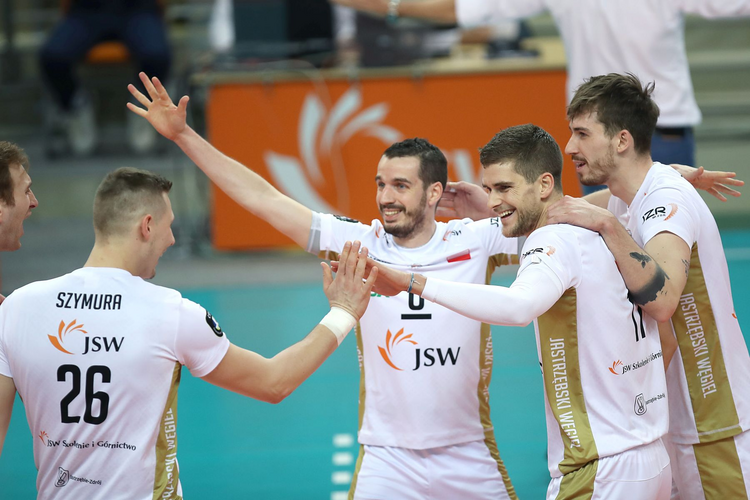


<!DOCTYPE html>

<html lang="pl">
<head>
    <meta charset="utf-8" />
    <title>ZawodnicyJW</title>
    <style>
        h1, h2 {
            color: black;
            background-color: aqua;
            text-align: center;
        }
    </style>
    <link href="styl_uklad.css" type="text/css" rel="stylesheet" />
    <link href="menu.css" type="text/css" rel="stylesheet" />
    <script src="igor-tab.js"></script>
</head>
<body>
    <header>
        <h1 style="color:black; background-color:aqua">Strona o HTML </h1>
    </header>
    <nav>
        <h2>Menu</h2>
        <ul>
            <li><a href="index.html">Strona Główna</a></li>
            <li>
                <a href="http://www.put.poznan.pl" target="_blank">
                    Strona PP
                </a>
            </li>

            <li><a href="artykul.html">Artykuł</a></li>
            <li><a href="tabelaPL.html">Tabela PlusLiga</a></li>
            <li><a href="formularz.html">Formularz</a></li>

            <li><a href="Informacje o nas.html">Informacje o nas</a></li>
            <li><a href="MAP.html">Znacznik MAP</a></li>
            <li><a href="Prezentacja.html">Prezentacja</a></li>
            <li><a href="Specjalisci.html">Nasi specjaliści</a></li>
            <li><a href="Sponsorzy.html">Sponsorzy PlusLiga</a></li>
            <li><a href="Canvas1.html">Latająca piłeczka</a></li>

        </ul>
    </nav>
    <article>
        <h2>Zawodnicy Jastrzębski Węgiel</h2>
        
        <map name="map" id="map">
            <area shape="poly" coords="5,299,45,270,85,263,94,227,96,187,117,167,172,181,176,216,179,240,155,276,206,308,229,344,275,360,328,315,322,263,352,243,376,269,359,323,278,405,199,377,181,369,176,434,188,501" alt="Rafał Szymura" href="https://pl.wikipedia.org/wiki/Rafa%C5%82_Szymura">
            <area shape="poly" coords="125,180,137,78,166,83,192,101,191,124,240,162,316,209,373,222,374,177,393,142,418,136,447,162,445,198,455,219,486,222,505,264,495,281,377,261,375,296,438,316,491,340,513,492,353,493,360,339,376,294,357,239,313,251,249,212,175,139,124,108" alt="Benjamin Toniutti" href="https://pl.wikipedia.org/wiki/Benjamin_Toniutti">
            <area shape="poly" coords="478,167,489,207,502,231,516,253,507,284,420,274,386,264,391,298,451,310,523,325,545,496,670,496,670,496,667,439,659,370,676,349,662,326,622,292,599,239,546,223,541,206,562,193,560,148,532,124,482,147" alt="Trevor Clevenot" href="https://pl.wikipedia.org/wiki/Tr%C3%A9vor_Cl%C3%A9venot">
            <area shape="poly" coords="570,112,596,72,636,72,658,106,654,150,688,184,726,251,736,321,748,365,750,426,749,498,617,493,672,440,669,375,684,346,674,313,633,283,602,228,552,214,569,199,608,212,611,188,582,181,564,154" alt="Tomasz Fornal" href="https://pl.wikipedia.org/wiki/Tomasz_Fornal">


        </map>
    </article>
    <aside> <iframe src="kontrolkiJS.html"></iframe>  </aside>
    <footer>
        Igor Kabat, 149390, EN1-L1, <br /><br />
        igor.kabat@student.put.poznan.pl
    </footer>
</body>
</html>